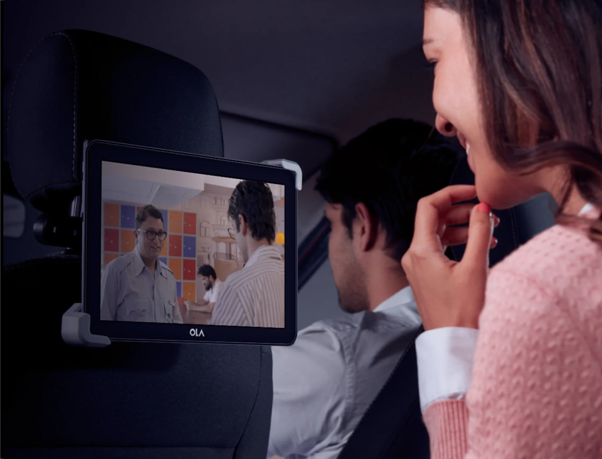
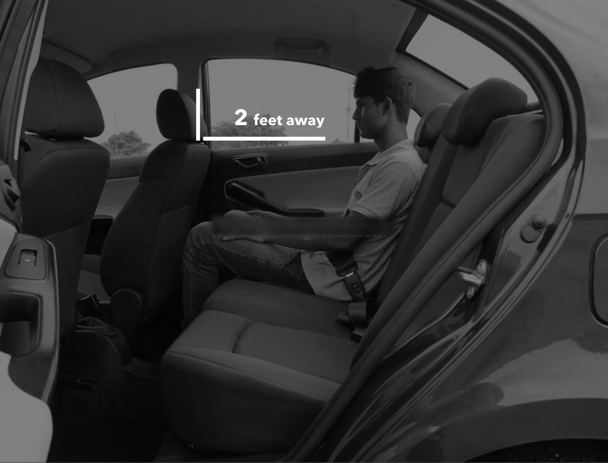
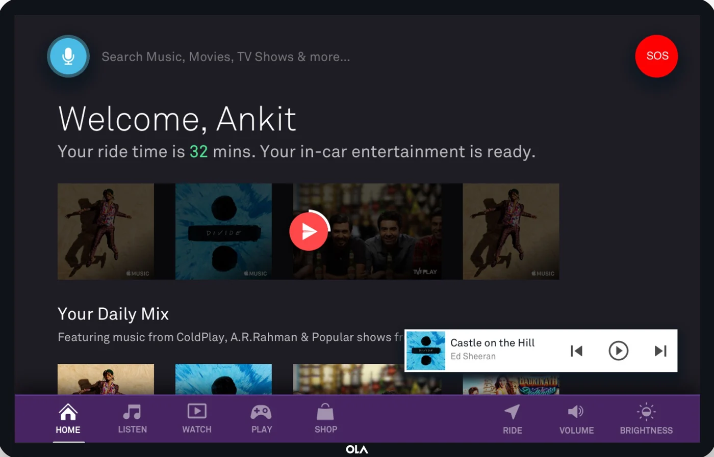
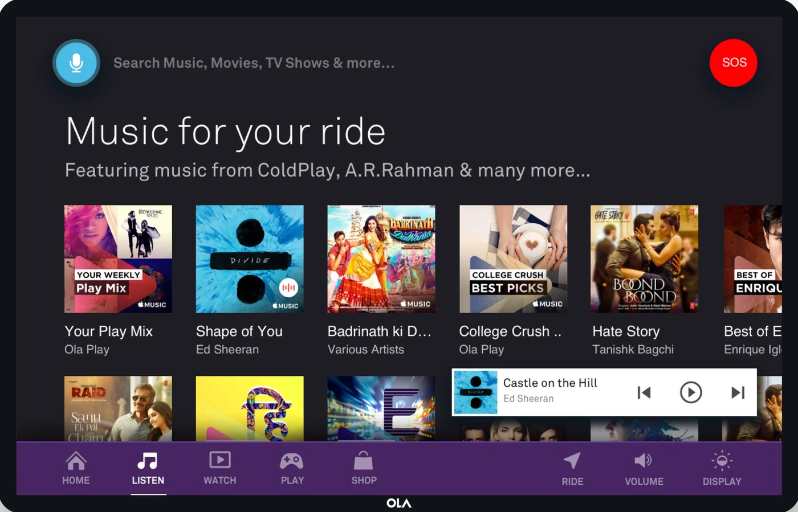
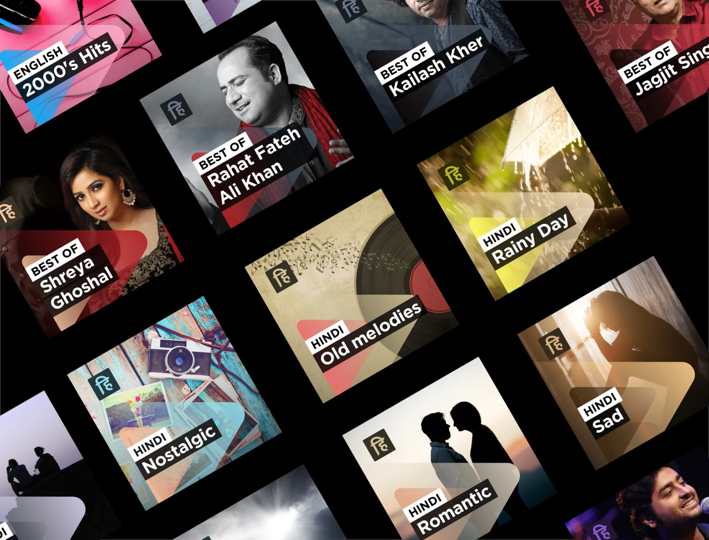

Ola Play is one of the world’s most advanced connected car platforms. It brings advanced car controls, choice of personalized content, and a fully connected interactive experience to its customers. Sedan cabs are equipped with a range of infotainment options and enhanced driver assistance.
Customers can tune into their favourite radio shows, catch up on sitcoms, enjoy movies and much more. Going home, to work, or maybe heading to the airport, Ola’s customers enjoyed and loved these comfortable rides with entertainment on-the-go.

Research & context
As of 2017, the consumer experience was limited to watching videos and listening to music during the ride. The team at OlaPlay identified our unique positioning as a consumer service. We planned to scale the in-cab experience beyond entertainment into gaming & hyperlocal commerce. Over a period of one year, the product, operations and research teams gathered much feedback regarding limitations of the existing design and offerings. Some of the key observations and problems we identified in user interviews were as follows-
Customers were unable to discover new and personalised content
To help with the launch, the consumer device always showcased content partner apps on the home screen. This was a thoughtful measure to exploit familiarity in content to this new “in-car experience” for Indian consumers. However, as content and number of daily OlaPlay rides scaled, this proved to be a bottleneck for new content discovery by users. Most users would stick to one or two channels that they recognized which lead to a very narrow spread in engagement.
The V1 interface was not scalable for non-media use cases, like commerce and gaming
The initial design of consumer tablet experience was designed for consumption of music and video during a cab ride and the navigation was failing to scale beyond entertainment and cater to newer product segments such as local commerce and in-car gaming.
Surveys indicated low scores on perceived safety from customers
Repeated user surveys and interviews suggested low scores on perceived safety in Ola’s cabs. As a part of the overall organisational effort, we had to enable quick and easy access to emergency controls in OlaPlay cabs as well, giving safety tools and empowering customers on their safety.
Marketing surveys showed low scores on brand awareness+recall for Ola Play
Numerous user interviews with the larger share of Ola’s customers revealed that many people were not aware of this category of cabs equipped with entertainment consoles. Our research team also deduced that the interface did not have many cues that strengthened OlaPlay’s brand. This made users slightly apathetic towards repeated booking of OlaPlay cabs.
Usability issues on the back-seat of a car
Our research team conducted usability tests by accompanying some users on a cab ride and quickly found out that simple tasks like searching, typing on a tablet was taxing on the arm muscles and prone to errors while sitting on the back-seat of a car.
During 2018, I led a team of 2 product designers and 2 UX researchers on the redesign of the in-cab consumer experience.
Design & prototyping
First order of business for the design team was to empathise and understand the situations and moods of daily commuters on Ola. They were often stuck in a cab for hours, either on daily commutes between home <> office or those long and boring rides to the airport.
The cab rides would often be subjected to harsh traffic noise and bumpy Indian roads, making it even harder for users to interact on a touch device. We had to internalise our learnings on the discomfort of interacting with a tablet device from the backseat of a car, which is 2 feet away.
So what constitutes a great in-cab experience, at a distance of 2 feet?
Entertainment UI should offer effortless navigation and control, keeping the user’s focus on content. At 2 feet, this was twice as important. We wanted users to sit back and enjoy without having to lean front and touch often to make decisions. We had to study and take cues from the in-home TV experience for android and apple TVs and retrofit them in the context of a moving cab.
In brief, the redesign involves and advocates for ‘design for distance’ by minimizing text inputs and having a content first approach.
The redesigned UI asks for zero typing by the user. Most common tasks like searching and typing queries would now be handled by an omnipresent voice search assistant. Ola partnered with Microsoft and the engineering team worked on deep integration of Cortana services into the OlaPlay platform, enabling users to perform system-wide voice searches easily.

Surfacing the content, making discovery easy
The first version of OlaPlay showcased featured content on a carousel followed by a list of content partners. All of the content offered by these partners were hidden under their own apps. We quickly prototyped an interactive version where all of the content is directly loaded onto the home page, and tested it with 5-10 users. On an average we found an increase in engagement times and many more content items played by users than the previous version. This proved to a be better design as we scaled the number of content partners as well.

The design team in close collaboration with the content/marketing team, began working on creating city-level as well as personalised playlists for users. After studying various leading content serving platforms, we rationalised that we could further increase both relevance and discoverability of the music content via themes or collections presented as playlists.

Designing a navigation that scales naturally
The navigation in the first version was designed with quick access in mind. However, it fails to scale as number of categories increased. The team brainstormed and iterated on many approaches to showcase the breadth of content in terms of navigation. We finally tested and settled on the most obvious seeming version, which had verbs/actions in the navigation rather than categories.
This user-friendly design enabled the business to get users into newer types engagements easily, increasing the spread of engagement. This also enabled us to introduce a new ‘ride mode’ to our customers, opening up engagement channels via local content and commerce. We wanted the design solution to seem as natural as possible. Hence, we had to begin designing and prototyping on the medium itself, which was maps.
Making OlaPlay a recognizable and personal brand
Throughout multiple surveys across user segments, we learnt that the brand penetration and recall was poor among Ola customers. We planned to introduce brand characteristics via visual cues and personalised UI. We prototyped and built an internal tool that generated on-brand playlist artworks that have the same language.

The team also identified and prototyped many touch points in the journey where we could introduce personalisation in a natural way. We re-designed the idle screens to belong to a certain city or a festival theme, making it a dynamic feature that invites customers to engage. We also designed and prototyped an audio feature that mimics a radio jockey, and contained personalised voice greetings during the start and end of trips. These messages worked on Google Andriod TTS and were designed to be dynamic, pulling in data from weather conditions and destination of the current ride.
Designing for local commerce and guided tours
With the new redesign, the team was also tasked with designing experiences which introduced local commerce and guided tours. Imagining features on top of the map, we began prototyping sponsored pit-stops or exclusive retail walk-in deals for interested commuters.
We observed many tourists used Ola cabs to take city tours in Mumbai and Bangalore, we prototyped an audio-visual guided tour for consumers taking city tours in an Ola.
The lean-back experience and designing for in-car gaming
During our in-person interviews, we observed a lot usability issues that came with the device being at a distance of 2 feet. We wanted to introduce a lean-back experience of OlaPlay where users could use the Ola app on their phones as remote controls. We prototyped a solution to this using websockets in framer. This prototype and demonstration helped us immensely in getting the confidence of product and tech teams towards building this new mode of interaction into the platform.
Using the same underlying technologies we were also able to design a simple in-car gaming setup. Users could play games on the tablet screen while the controls were available on their smartphone apps. With further refinements to the prototypes, we were able to achieve near zero latency on this mode of interaction between the phones and OlaPlay device.
Results and future track
As of 2018, Ola does around 3,50,000 rides per day across India. Around 50% of these rides are Prime/Ola Play(sedan) rides. On the back of the work we did together, Ola Play continues to be an important differentiator while having a very strong product roadmap well into the future